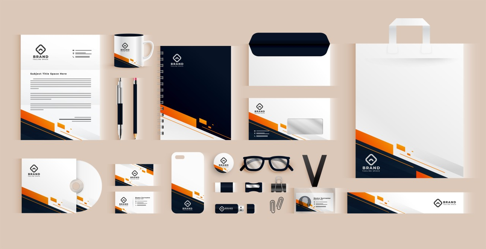
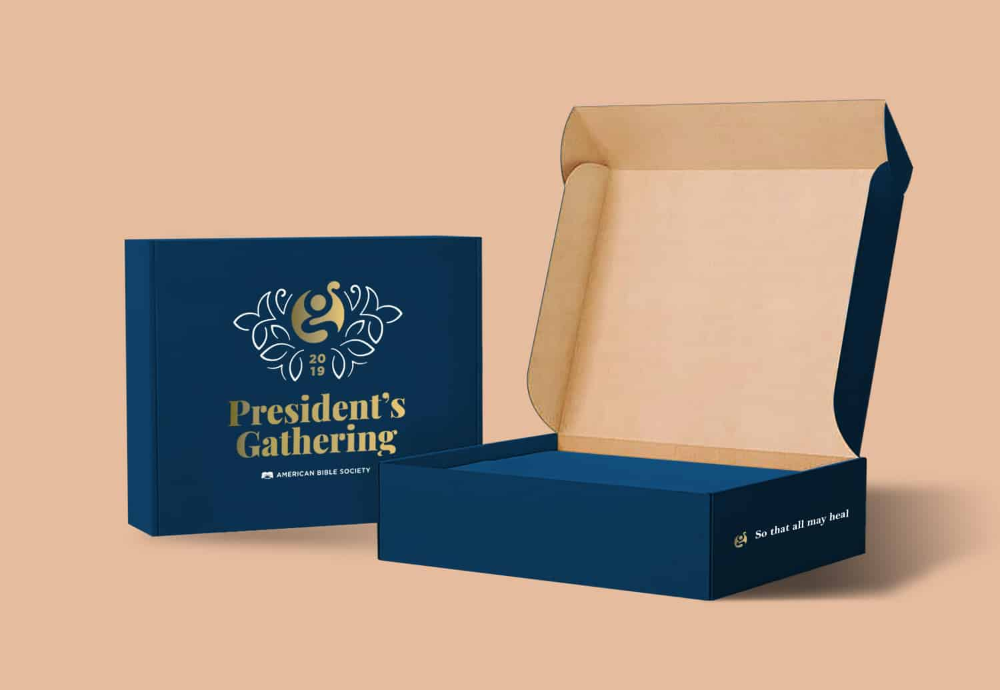
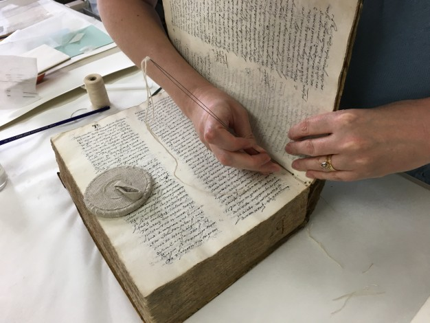

Per saperne di più
Che cos'è l'Editorial Design
Per Editorial Design si intende quell’ambito del design che coinvolge tutto ciò che prevede un impaginazione in un libro, e-book, magazine, brochure, ecc..
Il Design Editoriale non si ferma solamente alla creazione di un'impaginazione dal design bello e coinvolgente. Al contrario coinvolge più aspetti della progettazione grafica.
L'impaginazione infatti sarà studiata per facilitare e favorire la lettura del contenuto scritto, attraverso scelte mirate e specifiche per ogni tipo di supporto.
Se ritieni di aver bisogno di un Design Editoriale per impaginare e diffondere i tuoi testi scritti, questo è il servizio adatto a te.
 Per maggiori informazioni
Per maggiori informazioni
Che cos'è il Visual Identity?
La visual identity o brand image è invece l'insieme dei linguaggi e degli elementi visivi che un'azienda utilizza per comunicare. La brand identity, dunque, comprende anche la visual identity ed è legata al messaggio che l'azienda vuole lanciare.
 Per maggiori informazioni
Che cos'è il UI/UX Design?
Un UX / UI designer progetta esperienza utente e interfaccia utente: in altre parole, si assicura che un sito web o un'applicazione siano facili da usare, intuitivi e user-friendly.
 Per maggiori informazioni
Per maggiori informazioni
Che cos'è il Packaging Design?
La realizzazione grafica del packaging o packaging design delinea il volto del prodotto e prende in considerazione il target a cui è destinato il prodotto, l'estetica della confezione, scegliendo forme coerenti con un utilizzo pratico sia in fase di trasporto e che di apertura, la definizione delle azioni promozionali.
 Per maggiori informazioni
Che cos'è l'Utility Graphics?
La grafica di pubblica utilità è un settore della comunicazione visiva che si occupa di creare progetti e materiali per sensibilizzare e informare il pubblico su temi di interesse e importanza sociale, come ad esempio la prevenzione di malattie, la tutela dell'ambiente, la lotta alla discriminazione, la difesa dei diritti umani, ecc. Questa forma di grafica ha lo scopo di educare, sensibilizzare e cambiare comportamenti attraverso l'utilizzo di immagini, testi e messaggi visivi.
 Per maggiori informazioni
Per maggiori informazioni
Che cos'è il Bookbinding?
Il bookbinding, conosciuto anche come legatoria, è l'arte e il mestiere di creare libri rilegati. Questo processo comprende diverse tecniche e materiali utilizzati per unire i fogli di carta e copertine insieme in un libro finito.
 Per maggiori informazioni
Tipologie di rilegature
Filo refe
La rilegatura filo refe è un tipo di rilegatura utilizzata per unire insieme le pagine di un libro o di un documento tramite un filo che passa attraverso i fogli piegati e forma una serie di punti di sutura lungo il margine del libro. Questo tipo di rilegatura è particolarmente resistente e offre una buona durata nel tempo. È comunemente utilizzata per libri di testo, riviste e documenti che devono essere maneggiati frequentemente.
Dos-à-dos e tête-bêche
La tecnica dos-à-dos (dorso a dorso in francese) è usata per legare insieme due libri in modo che il dorso dell’uno corrisponda al dorso dell’altro, mantenendo in comune la controcopertina e entrambi i libri sono orientati nello stesso senso. È un formato di legatura risalente al Rinascimento, usato soprattutto per i testi sacri, come il Piccolo Catechismo di Martin Lutero e spesso impreziosito da ricami, incisioni, placche dorate.
Bodoniana
La copertina alla Bodoniana prende il nome dal celebre tipografo settecentesco Gianbattista Bodoni che per primo utilizzò una copertina in cartone per proteggere i volumi che stampava. Probabilmente il suo scopo era esclusivamente volto alla facile e duratura consultazione del libro, che all’epoca veniva cucito e piegato a mano o raccolto in folio e incollato a blocco con un tessuto a garza sul dorso e una coperta. Oggi è comunemente definita bodoniana una rilegatura che unisce copertina, dorso e retrocopertina tramite i risguardi nella parte interna e la garza sul dorso.